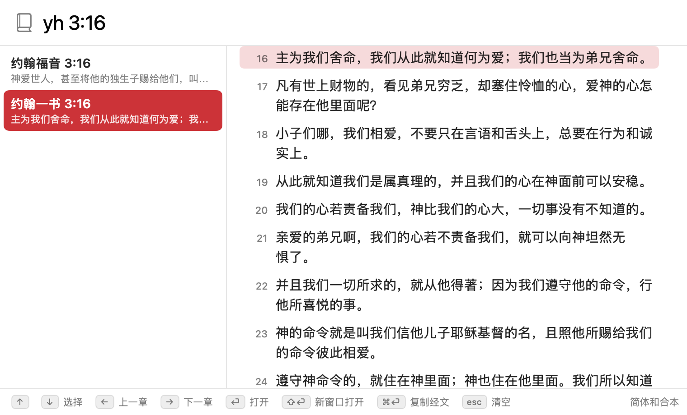
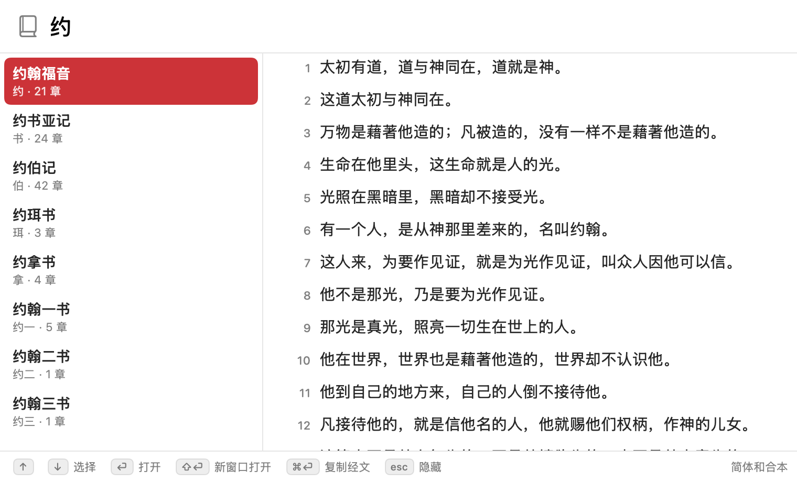

其他 app
⌥Space
动作按 ⌥Space
正在别的 app 里读东西，想起一处经文。好查经在后台，屏幕上只有菜单栏里的书本图标。
7 个真实使用场景，共 36 帧。每个场景从左往右读，像看电影分镜一样，一帧一个瞬间。
这份文档回答一个问题：用起来，一步一步是什么感觉？每一帧由三样东西组成：那一刻屏幕上的样子、用户按下的键、一句说明（用户在想什么，或者 app 做了什么）。不用打开 app，就能把一整件事从头到尾过一遍。
每个场景只走一条线，不画分支。所有界面之间怎么连，见 wireflow.html；判断逻辑见 user-flow.html；界面清单见 app-map.html。横向滚动每一条分镜；点图可以放大。
用户想在不离开手头材料的情况下，几秒钟内看到哥林多前书 13:4-8 的原文。
动作按 ⌥Space
正在别的 app 里读东西，想起一处经文。好查经在后台，屏幕上只有菜单栏里的书本图标。

动作输入 lq 13:4-8
搜索窗口出现在鼠标所在屏幕的中间偏上，光标已在输入框里。中间两行字提示可以怎么写。

动作按 ⏎
边打边出结果：只命中「哥林多前书 13:4-8」一行，已自动选中。右侧预览从第 4 节开始，4–8 节带底色。

动作开始读；← → 可以翻到上一章、下一章
搜索窗口自动收起，阅读窗口打开整章，第 4–8 节高亮。窗口标题带节号，工具栏只写「哥林多前书 13」。
用户想用最短的缩写 yh 查 3:16，再从同名的候选里挑出自己要的那一卷。
也可以用鼠标：点一下某行是选中，再点一下已选中的行就是打开。
动作输入 yh 3:16
只记得缩写 yh。约翰福音和约翰一、二、三书的拼音都以 y、h 开头。

动作按 ↓（或 ⌃N）
剩两行：约翰二书、三书只有 1 章，已被自动排除。每行下面那行小字是该节经文的开头，一眼能认出是哪一卷。

动作按 ⏎
选中移到「约翰一书 3:16」，右侧预览立刻换成约翰一书第 3 章，从第 16 节开始。
动作开始读
阅读窗口打开约翰一书第 3 章，第 16 节高亮，搜索窗口收起。这个状态没有截图，按代码里的标题和高亮规则画出。
用户想让哥林多前书 13 留在屏幕上，同时再打开约翰福音 3，几个窗口并排对照。
动作按 ⌘F（或 ⌥Space）
哥林多前书 13:4-8 已经开着。想再查一处，按 ⌘F 或 ⌥Space 都可以。
动作输入 yhfy 3
搜索窗口回到最前面。每次从收起状态呼出，输入框都是空的。
动作按 ⇧⏎（或 ⌘D）
只写到章，结果是整章「约翰福音 3」。这时按 ⏎ 会把前面那个窗口的内容换掉，⇧⏎ 才是另开一个。

动作按 ⌘D（或点右上角 ⧉ 按钮）
新窗口沿用前一个窗口的大小，落在它的右下方。约翰福音 3 是整章，没有高亮。
动作在最前面的窗口里按 →
又多了一个「约翰福音 3」，继续向右下错开；想开几个开几个。错开的距离在这里画得比实际大。
动作把几个窗口拖开，对照着读
只有最前面的窗口翻到约翰福音 4，标题跟着变，其余窗口不动。翻章后总是回到该章第 1 节，不带高亮。
用户想把哥林多前书 13:4-8 连同出处一起贴进正在写的笔记。
动作按 ⌥Space，输入 lq 13:4-8
笔记写到一半，需要引一段经文。光标停在要贴的位置。
动作按 ⌘⏎
结果已选中，预览里看得到要复制的 4–8 节。底栏最右一组提示写着「⌘⏎ 复制经文」。
动作回到笔记
搜索窗口直接收起，屏幕上没有任何「已复制」的提示。按代码推断，此时前台仍是好查经，要自己切回笔记（未在真机验证）。
动作（此刻剪贴板里的内容）
纯文本：每节一行、不带节号，最后一行是「—— 出处 (和合本)」。括号是半角的，前面有一个空格。
动作继续写笔记
六行文字落进笔记：五节经文加一行出处。
动作同样的 ⌘⏎，但查询只写到章，如 yhfy 3
没写节号时复制的是整章，每行前面带节号。只有书名的结果（如「约」）复制的是第 1 章。
用户只记得书名里有个「约」字，或者手滑多打了一个字母，想知道 app 会怎么回应。
动作输入 约
不记得章节，先打一个字看看。

动作按 ⏎ 打开，或先用 ↑ ↓ 换一卷
列出书名含「约」的 8 卷，约翰福音排第一，因为「约」正是它的简称。小字是「简称 · 章数」，右侧预览的是第 1 章。
动作用 → 往后翻到想看的那一章
只有书名的结果一律打开第 1 章：整章、无高亮。已经是第 1 章，所以 ‹ 是灰的。

动作（对照用，不属于这条操作线）
真实截图里的同一种状态，书是创世记：停在第 1 章时 ‹ 变灰，按 ← 没有反应。

动作删掉多余的字母，补上章节，如 yhfy 4:24
本想打 yhfy，多按了一个 x。结果区只剩两行字：「没有匹配的书卷或章节」和一句规则说明，不会替你猜。
yhfy 4:24拼音首字母yuehan 3 16完整拼音，前缀即可yuehfy 4首字母和完整拼音混用约 4:24中文简称lq 13:4-8简称的拼音首字母约翰福音 4:24中文全名，子串精确匹配*fy 3:16* 任意个音节，? 一个音节yhfyx多一个字母yfhy 4:24字母顺序颠倒yhfy 99书对了，但没有这一章动作按规则重打
书名部分要么精确命中，要么没有结果，这是有意的。章或节不存在的书也会被排除，所以 yh 4:24 只剩约翰福音。
用户第一次打开 app，想知道以后怎么把它叫出来、要不要先设置什么。
不需要任何系统权限，也没有首次设置；⌥Space 从启动那一刻起就可用。
动作打开「好查经」（双击 app，或点 Dock 里的图标）
第一次打开。菜单栏里还没有书本图标，Dock 图标下面也没有小圆点。
动作先点菜单栏的书本图标看看
启动后直接出现搜索窗口，光标已经在输入框里；菜单栏右侧多了一个书本图标，Dock 图标和「好查经 / 文件 / 编辑 / 窗口」主菜单也在。没有任何授权提示，也不用先设置什么。
动作点「打开搜索 (⌥Space)」，或按 esc 关掉菜单
菜单只有三项：「打开搜索 (⌥Space)」「关于好查经」「退出好查经」。第一项括号里写的就是全局快捷键，app 待在后台、一个窗口都没有的时候，这个图标也一直在。
动作记住 ⌥Space，开始输入
要记的只有 ⌥Space：在任何 app 里按它呼出搜索，再按一次收起。其余的按键都写在底栏，而且底栏每一项都是按钮，可以直接用鼠标点，边用边学。
用户想把窗口都收走、让快捷键继续待命，到真的不用了才彻底退出。
动作按 esc（或 ⌘W，或再按一次 ⌥Space）
搜索窗口在最前面，暂时不查了。这三种按法都只是把它收起，阅读窗口不受影响。
动作按 ⌘Q（Dock 图标右键的「退出」效果相同）
还开着两个阅读窗口。⌘Q 在菜单里的名字是「关闭所有窗口（保留后台）」，它的下面才是真正的「退出好查经」。
动作去忙别的
搜索窗口和所有阅读窗口都关了，app 还在运行：菜单栏图标在，Dock 图标下面的小圆点也还在。
动作查完后，点菜单栏的书本图标
快捷键照常工作，搜索窗口回来，输入框是空的。点 Dock 图标也能把它叫回来。
动作点「退出好查经」
真正的退出只有这一个命令，菜单栏图标菜单和「好查经」主菜单里各有一份，都没有快捷键。
动作（结束）
书本图标消失，Dock 上的小圆点也没了，⌥Space 不再响应。系统注销、关机、重启时 app 也会正常退出。
把七个场景从头走一遍之后，站在使用者的位置上觉得别扭、或者值得再想一想的地方。前两条来自截图过程，其余来自对照代码走查；没有在真机上验证的会注明。
预览和阅读窗口都把目标节滚到顶端（PassageView 用 anchor .top）。章一长，章标题就滚出视野，高亮的第一节紧贴上方分隔线，上面没有一点余量，也看不到前一节作上下文。见场景 1 第 3 帧、场景 2 第 2、3 帧、场景 3 的约翰福音 3。哥林多前书 13 只有 13 节、一屏放得下，所以那张截图里标题还在；同一个界面在长章和短章里长得不一样。
选中行和高亮底色用的是系统强调色（Color.accentColor）。截图里是红色，只因为这台 Mac 的强调色设成了红色；换一台机器可能是蓝色、紫色。如果希望有固定的品牌色，现在没有。
窗口直接收起，没有提示音、没有「已复制」字样（场景 4 第 3 帧）。用户只能靠粘贴一次来确认成功与否。
代码里 hide() 只是把窗口 orderOut，没有把前台交还给呼出之前的 app。按 esc 或 ⌘⏎ 之后，菜单栏很可能仍是「好查经」，用户要自己 ⌘Tab 或点一下才能回去接着打字。对「查一下就回去」和「复制后马上粘贴」这两条主线都是一道多余的手续。这一点没有在真机上验证。
已有阅读窗口时，⏎ 会把最前面那个窗口的内容直接换掉（场景 3 第 3 帧），没有后退、没有历史。对照经文时手滑一次，原来那处就得重新查。
在「哥林多前书 13:4-8」窗口里按 → 再按 ←，回来的是没有高亮的「哥林多前书 13」，并且停在第 1 节。另外同一个窗口里标题栏写「13:4-8」、工具栏写「13」，两处说法不一样。
两个窗口标题都叫「约翰福音 3」，「窗口」菜单里也是两个同名项。副本总是从该章开头（或高亮处）开始，不会跟着原窗口滚到的位置。
⌘Q 在菜单里叫「关闭所有窗口（保留后台）」，说得很清楚；但 Dock 右键的「退出」是系统文字，点了之后窗口没了、图标还亮着，用户会以为没退成功。真正的「退出好查经」没有快捷键，只能用鼠标点。
「拼音只按字首/音节前缀精确匹配…」这句话偏技术。书名打错（yhfyx）和章节超出范围（yhfy 99）显示的是同一句「没有匹配的书卷或章节」，用户分不清是哪一半错了。不做模糊匹配是有意的，但可以说得更像人话。
这一条和下一条说的都是已经移除的 Space+P 组合键。app 现在不需要任何系统权限，第一次启动没有弹窗，菜单里也没有那个开关项（见场景 6）。
全局快捷键只剩 ⌥Space，它在哪里都是同一个意思：呼出，再按一次收起。菜单第一项现在写的是「打开搜索 (⌥Space)」。
底栏列了 ↑↓、⏎、⇧⏎、⌘⏎、esc，没有 ⌘D、⌃N / ⌃P，也没有「点两下打开」。⌘D 在「关于好查经」窗口底部的说明里有一句，⌃N / ⌃P 只写在 README 里。